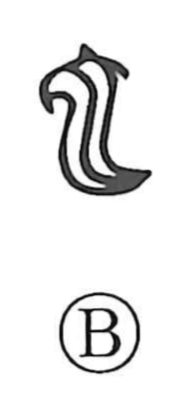

他

Uncategorized
Kun: hoka, yoso | On: ta
other ・ another ・ elsewhere
Explanation
他 is a phono-semantic character: the person radical 亻 marks a human referent, while 它 provides the sound and the sense of “other.” In bronze inscriptions we find expressions like 也邦, “another country,” where 也/它 carry the meaning “other” or “elsewhere.” The Book of Odes (Yong, “Cypress Boat”) likewise uses 它 in a vow “till death I will have no other,” evoking the idea of a “second heart,” that is, duplicity. Building on this early use of 也 and 它 for “other” and “some other place,” 他 adopts 亻 with the phonetic 它 to write the notion of “another (person)” with precision.